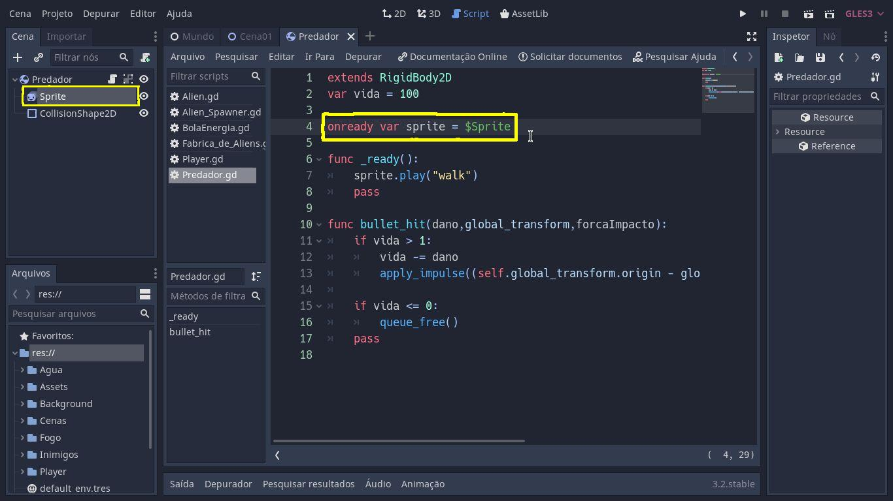

COMO FUNCIONA ESSE TIPO ONREADY
Toda vez que quisermos pegar um nó pronto da árvore e armazenar em uma variável global, ou seja,
toda variável criada fora das funções são denominadas variáveis globais.
EXEMPLO:

Qualquer dúvida é só assistir o vídeo abaixo!